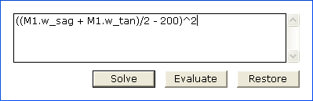

The Solver attempts to find optimal values for the LaserCanvas variables my minimizing or maximizing its fitness function.

The expression to be optimized is entered into the edit field. The equation can span multiple lines.
Clicking the Solve button commences the search.
Clicking the Evaluate button displays a window indicating the current value that the expression evaluates to, without initiating the search.
Clicking the Restore button returns the LaserCanvas variable values to those before the Solver was opened.
The fitness function is expressed as an equation that evaluates to a single value. The solver attempts to either minimize or maximize its value.
If you wish to optimize to a value other than zero, we recommend minimizing terms such as
(x – 500)^2
that diverge as x deviates either above or below 500.
For solving, it may also be useful to use comparative operators such as
(x <= 20)
which evaluate to 1 if the condition is true, and 0 otherwise.
The parameters of the optics in the system can be accessed using the notation
M1.w_sag
where M1 is the optic’s tag and
| Property | Description | |
| w_sag | w_tan | Sagittal or tangential mode size at the optic. |
| R_sag | R_tan | Sagittal or tangential wave front radius of curvature at the optic. |
| w0_sag | w0_tan | Sagittal or tangential mode nearest the optic. See the notes on Optic Graph.s |
| z0_sag | z0_tan | Distance from the optic to the nearest sagittal or tangential waist. See notes on Optic Graphs. |
| zR_sag | zR_tan | The mode Rayleigh length in the sagittal or tangential plane. |
| dz0 | The beam astigmatism at the optic. | |
Properties of the system can be accessed directly by typing in one of the following.
| Property | Description | |
| G_sag | G_tan | Cavity stability in the sagittal or tangential plane. |
| Lopt | Optical cavity length, in mm. | |
| frep | Cavity mode spacing, in MHz. | |
Finally, the LaserCanvas variables can be included in the fitness function, by typing x, y, or z.
The Solver performs a very simple Nelder-Mead type simplex minimize search. For optimal results, it may be necessary to try different variable starting values and different weightings to the desired parameters in the optimization equation. Cases where the Solver cannot find a satisfactory solution do not necessarily imply that a solution cannot be found, although there are many instances when solutions do not exist.
| Property | Description |
| Max. Iterations | The maximum number of solver steps to perform. Setting a high value may cause the program to become unresponsive. |
| Function Tolerance | The tolerance on the fitness function to terminate the search. |
| Solve For | Specifies whether the fitness function should be minimized or maximized. Finding the maximum is equivalent to finding the minimum of the negative fitness function. |